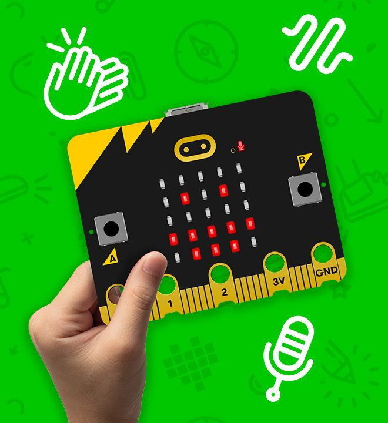
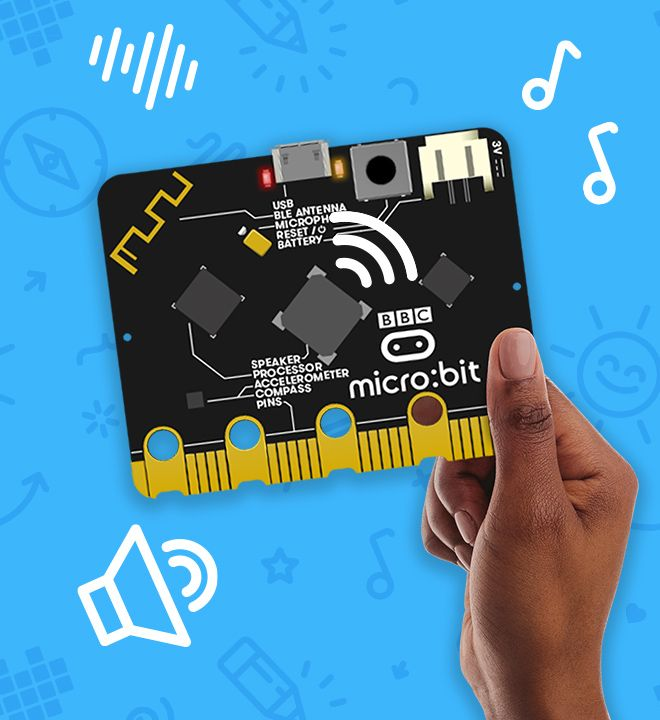
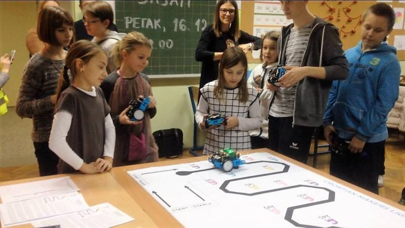

| Microbit teaching and learning |
|



A micro bit is a mini sized computer that is used to help people learn and get better at coding. It is a chip that interacts with what you code so you can code it to do something and it will use it’s LED light panel to display it in a 5 by 5. They can connect with a lot of different coding softwares and are really good for learning how to code as it’s fun. They also have a lot of additional things that you can add on to them like speakers and cameras making it that there is a whole range of things you could do. In total a micro bit is a small computer that you put code on to get to do something.
©Copyright 2021 microbit teaching and learning | Terms of use | privacy
gap